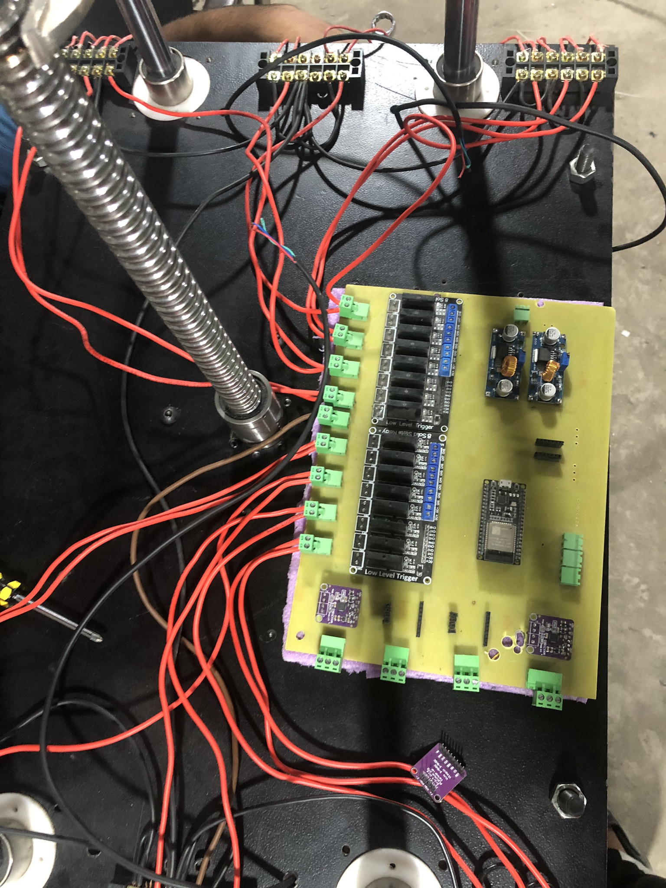
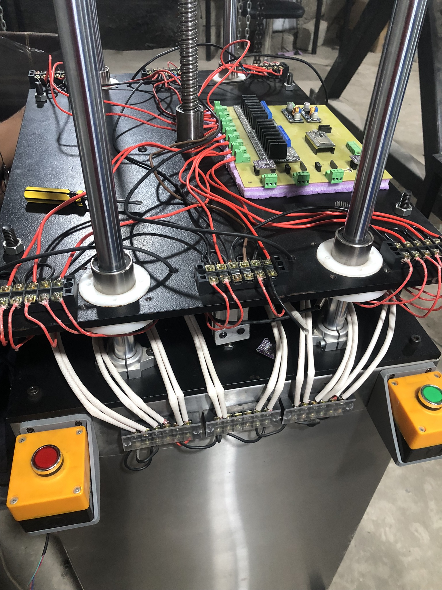

Paratha Pressing Machine
View Code ↗During my tenure at Esforge Pvt Ltd, I contributed to the development of a Paratha Pressing Machine, a sophisticated automated system designed to press and cook parathas with precision and efficiency. I was responsible for the embedded firmware development, PCB design, and PCB fabrication, ensuring a seamless integration of hardware and software to achieve optimal performance.
Project Overview
The Paratha Pressing Machine was engineered to automate the process of pressing and cooking parathas, capable of handling 4 parathas at a time. The machine utilized a heated plate, controlled with precision temperature sensing, to press and cook the parathas uniformly. The system incorporated advanced components like thermocouples for temperature monitoring, solid-state relays (SSRs) for heater control, and a NEMA 32 stepper motor with a gearhead for applying the necessary pressing force. The entire operation was managed using an ESP32 microcontroller running FreeRTOS to handle multiple tasks concurrently.
System Architecture
The core of the system was an ESP32 microcontroller, chosen for its robust processing capabilities and built-in Wi-Fi functionality. The ESP32 managed multiple tasks, including temperature control, motor operation, and system monitoring, using FreeRTOS to ensure real-time performance. The machine featured a heated pressing plate, with temperature regulated using K-type thermocouples interfaced via a MAX6675 module for accurate readings. Heating was controlled through solid-state relays (SSRs), which provided precise and reliable switching of the heaters.
A NEMA 32 stepper motor with a gearhead was used to deliver the high torque required for pressing the parathas. The gearhead increased the motor's force output, ensuring consistent pressure across the parathas for uniform cooking. The stepper motor was driven by a dedicated driver, configured for microstepping to achieve smooth and precise movements.
Temperature Control and Heating System
The heating system was a critical component of the machine. The pressing plate was equipped with industrial-grade cartridge heaters, controlled via solid-state relays. The SSRs allowed for rapid switching, enabling precise temperature regulation. The temperature of the plate was continuously monitored using K-type thermocouples, which provided real-time feedback to the ESP32. A PID control algorithm, implemented in the firmware, maintained the plate temperature within a tight range (±2°C) to ensure consistent cooking results.
To enhance safety, the system included an over-temperature protection mechanism. If the plate temperature exceeded a predefined threshold, the ESP32 would automatically disable the heaters and trigger an alert, preventing potential damage to the machine or parathas.
Motor Control and Pressing Mechanism
The pressing mechanism relied on a NEMA 32 stepper motor with a gearhead, which provided the increased force necessary to press 4 parathas simultaneously. The gearhead amplified the motor's torque, ensuring sufficient pressure to flatten the dough balls into uniform parathas. The stepper motor was driven by a DM542 stepper driver, configured for 1/16 microstepping to achieve smooth and precise motion.
The motor was mounted on a linear actuator system, as seen in the hardware image, where a leadscrew mechanism (visible at the top center) translated the motor's rotational motion into linear movement. This allowed the pressing plate to move up and down with high precision. The firmware included a custom motion control algorithm to synchronize the pressing cycle with the heating process, ensuring each paratha was pressed and cooked for the optimal duration.
Firmware Development with FreeRTOS
The firmware for the ESP32 was developed using the Arduino framework with FreeRTOS to manage the system's multitasking requirements. FreeRTOS enabled the ESP32 to handle multiple tasks concurrently, including:
- Temperature monitoring and PID control for the heating plate
- Stepper motor control for the pressing mechanism
- Data logging and system status monitoring
- Error handling and safety checks
Each task was assigned a priority to ensure critical operations, such as temperature regulation, were executed without delay. The firmware also included a state machine to manage the machine's operational phases: dough placement, pressing, cooking, and ejection. This ensured a smooth and automated workflow, minimizing human intervention.
Hardware Design: PCB and Fabrication
I designed and fabricated a custom PCB to integrate all the electronic components of the Paratha Pressing Machine. The PCB housed the ESP32 module, MAX6675 thermocouple interface, SSR drivers, stepper motor driver connections, and power regulation circuits. The board was designed using KiCAD, with careful consideration for signal integrity and thermal management, given the high-power components involved.
The PCB featured a 4-layer design to accommodate the complex routing requirements and ensure proper grounding. High-current traces for the heaters and motor drivers were widened to handle the load, and thermal vias were added to dissipate heat from the SSRs. The fabrication process involved working with a local PCB manufacturer to produce the boards, followed by manual assembly and testing to ensure reliability.
System Integration and Deployment
The hardware image provided shows the integrated system during deployment. The setup includes the ESP32 module, stepper motor driver, SSRs, and thermocouples, all connected via a custom wiring harness. The green terminal blocks facilitated easy connections for the heaters, motor, and sensors, while the purple foam base provided insulation and stability for the PCB.
During deployment, the machine was tested extensively to ensure it could press and cook 4 parathas simultaneously with consistent results. The temperature control system maintained the plate at the optimal cooking temperature (around 180°C), and the stepper motor applied uniform pressure to achieve the desired paratha thickness. The entire process—from dough placement to cooked paratha ejection—was completed in under 2 minutes per batch.
Technical Features
- Simultaneous pressing and cooking of 4 parathas at a time
- Precise temperature control using K-type thermocouples and PID algorithm
- High-torque pressing with NEMA 32 stepper motor and gearhead
- Real-time multitasking with ESP32 and FreeRTOS
- Solid-state relays for reliable heater control
- Custom-designed and fabricated PCB for integrated electronics
- Over-temperature protection for safety
This project at Esforge Pvt Ltd demonstrated my expertise in embedded systems, firmware development, and hardware design. The Paratha Pressing Machine successfully automated a traditionally labor-intensive process, delivering consistent quality and efficiency in paratha production.